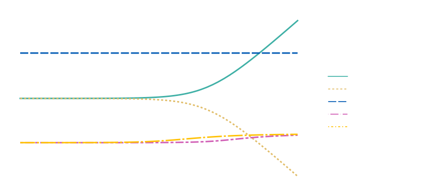

Localisation problem in Unruh-DeWitt detectors with quantised centre of mass
Evan Galea, and Magdalena Zycha, b
Physical Review D 107, 056023 (2023)
Relativistic Quantum Physics
- 1900s: Einsteinian revolution—special relativity and quantum mechanics
- Mid-1920s: theories unified by relativistic quantum field theory
- Still many open questions:
- How should one define a 'particle' in quantum theory?
- Can one provide a consistent single-particle description of relativistic quantum mechanics?
- What can the transition from relativistic quantum field theory to non-relativistic quantum mechanics tell us?
Unruh-DeWitt (UDW) Detector Model
Originally proposed by Unruh [1], then simplified by DeWitt [2].
Couples a two-level system to a quantised scalar field $\hat{\phi}(\vec{x})$
\[ \hat{H}_I = \lambda \hat{\mu} \otimes \hat{\phi}(\vec{x}) \]Polarisation or 'monopole' operator exchanges energy levels
\[ \hat{\mu} = | g \rangle \langle e | + | e \rangle \langle g | \]Unruh-DeWitt (UDW) Detector Model
Originally proposed by Unruh [1], then simplified by DeWitt [2].
Couples a two-level system to a quantised scalar field $\hat{\phi}(\vec{x})$
\[ \hat{H}_I = \lambda \hat{\mu} \otimes \hat{\phi}(\vec{x}) \]Field can be decomposed as superposition of plane wave modes
\[ \hat{\phi}(\vec{x}) = \frac{1}{(2\pi)^{3/2}} \int \frac{d^3k}{\sqrt{2 \omega(\vec{k})}} \Big ( \hat{a}(\vec{k}) e^{-i \vec{k} \cdot \vec{x}} + \mathrm{H.c.} \Big ) \]Unruh-DeWitt (UDW) Detector Model
Has many applications, which includes:
- Quantum field theory, particularly in curved spacetime
- Relativistic quantum information
- As an idealised model of the atom-light interaction
Detectors with Quantised Centre of Mass
Considered by Unruh and Wald for a box detector [3]
\[ \hat{H}_I = \lambda \int d^3x \, \hat{\mu}(\vec{x}) \otimes \hat{\phi}(\vec{x}) \]with a position-dependent monopole operator of the form
\[ \hat{\mu}(\vec{x}) \equiv \psi_g^*(\vec{x}) \psi_e(\vec{x}) | g \rangle \langle e | + \psi_e^*(\vec{x}) \psi_g(\vec{x}) | e \rangle \langle g | \]Detectors with Quantised Centre of Mass
Alternative extension considered by Stritzelberger and Kempf [4]
\[ \hat{H}_I = \lambda \int d^3x \, \hat{\mu} \otimes | \vec{x} \rangle \langle \vec{x} |_D \otimes \hat{\phi}(\vec{x}) \]Detector's free Hamiltonian now includes a kinetic term
\[ \hat{H}_D = \frac{\hat{\vec{p}}^2}{2 M} + E | e \rangle \langle e | \]Also treated by Wilkens [5] in context of atom-light interaction
Relativistic Centre of Mass?
Problem: both extensions assume a non-relativistic detector!
Can introduce relativistic centre of mass in two different ways:
- Second-quantised model—relativistic quantum field theory
- First-quantised model—relativistic quantum mechanics
We consider both models, starting with second-quantised case
Relativistic Second-Quantised Detector
Relativistic second-quantised detector model proposed by Unruh [1]
- Replace energy levels of detector by fields $| j \rangle \to \hat{\psi}_j$ \[ \hat{\mu}_\hat{\psi}(\vec{x}) = \hat{\psi}^\dagger_g(\vec{x}) \hat{\psi}_e(\vec{x}) + \hat{\psi}^\dagger_e(\vec{x}) \hat{\psi}_g(\vec{x}) \]
- The interaction Hamiltonian takes the form \[ \hat{H}_I^{(\mathrm{2nd})} = \lambda^{(\mathrm{2nd})} \int d^3x \, \hat{\mu}_\hat{\psi}(\vec{x}) \otimes \hat{\phi}(\vec{x}) \]
- Coupling constants between models are dimensionally distinct!
Relativistic Second-Quantised Detector
Giacomini and Kempf [6] simplified by restricting to one-particle sector
- Interaction couples position and internal degrees of freedom \[ \hat{H}_I^{(\mathrm{2nd})} \Big |_{\mathcal{H}^D_1} = \lambda^{(\mathrm{2nd})} \int d^3x \, \Big( | \vec{x}_g \rangle \langle \vec{x}_e |_D^{(\mathrm{2nd})} + | \vec{x}_e \rangle \langle \vec{x}_g |_D^{(\mathrm{2nd})} \Big) \otimes \hat{\phi}(\vec{x}) \]
- Looks similar to previous non-relativistic model, except that \[ | \vec{x}_j \rangle_D^{(\mathrm{2nd})} \equiv \frac{1}{(2\pi)^{3/2}} \int \frac{d^3p}{\sqrt{2 E_j(\vec{p})}} e^{-i \vec{p} \cdot \vec{x}} | \vec{p}, j \rangle_D \]
- Position states are not Fourier transforms of momentum eigenstates!
Some Caveats
Two detectors $\hat{\psi}_g$ and $\hat{\psi}_e$?
- Detector Hilbert space given by $\mathcal{H}^D = \mathcal{H}_{g} \otimes \mathcal{H}_{e}$
- Can refactor Hilbert space to separate centre of mass and internal degrees of freedom
- Still interpret as single detector—effective description!
Some Caveats
Detector does not remain localised—no confining potential!
- Detector spreads out, 'delocalises' or 'decoheres'
- Typically want detector confined to finite region [1, 3, 7]
- Can in principle synthesise models—localised detector with relativistic centre of mass
A Relativistic First-Quantised Model?
Quantise the detector in a boosted frame with momentum $\vec{p}$
\[ \hat{H}_D = \sqrt{\hat{\vec{p}}^2 + \hat{M}^2} \, . \]To describe internal energy, we must quantise the mass-energy
\[ \hat{M} = M_g | g \rangle \langle g | + M_e | e \rangle \langle e | \, , \]where
\[ \hat{M} | j \rangle = M_j | j \rangle \, . \]A Relativistic First-Quantised Model?
Interaction Hamiltonian should have the form
\[ \hat{H}_I^{(\mathrm{1st})} = \lambda^{(\mathrm{1st})} \int d^3x \, \hat{\mu} \otimes | \vec{x} \rangle \langle \vec{x} |_D^{(\mathrm{1st})} \otimes \hat{\phi}(\vec{x}) \]This Hamiltonian coincides with the non-relativistic expression
A Relativistic First-Quantised Model?
Interaction Hamiltonian should have the form
\[ \hat{H}_I^{(\mathrm{1st})} = \lambda^{(\mathrm{1st})} \int d^3x \, \hat{\mu} \otimes | \vec{x} \rangle \langle \vec{x} |_D^{(\mathrm{1st})} \otimes \hat{\phi}(\vec{x}) \, . \]But we have to be a little careful!
Q. What time parameter does the Hamiltonian generate time translations for? [8]
A. Inertial detector. Generate time translations wrt coordinate time $t$
A Relativistic First-Quantised Model?
Interaction Hamiltonian should have the form
\[ \hat{H}_I^{(\mathrm{1st})} = \lambda^{(\mathrm{1st})} \int d^3x \, \hat{\mu} \otimes | \vec{x} \rangle \langle \vec{x} |_D^{(\mathrm{1st})} \otimes \hat{\phi}(\vec{x}) \, . \]But we have to be a little careful!
Q. How do we define the position states $| \vec{x} \rangle_D^{(\mathrm{1st})}$?
A. Take states to be Fourier transform of momentum eigenstates
\[ | \vec{x} \rangle_D^{(\mathrm{1st})} \equiv \frac{1}{(2\pi)^{3/2}} \int d^3p \, e^{-i \vec{p} \cdot \vec{x}} | \vec{p} \rangle_D \, . \]A Relativistic First-Quantised Model?
Interaction Hamiltonian should have the form
\[ \hat{H}_I^{(\mathrm{1st})} = \lambda^{(\mathrm{1st})} \int d^3x \, \hat{\mu} \otimes | \vec{x} \rangle \langle \vec{x} |_D^{(\mathrm{1st})} \otimes \hat{\phi}(\vec{x}) \, . \]But we have to be a little careful!
Q. How are the coupling constants between models related?
A. Take couplings to coincide for detector at rest
\[ \lambda^{\mathrm{(2nd)}} = \sqrt{2 (M_g^2 + M_e^2)} \, \lambda^{\mathrm{(1st)}} \, . \]Summary
First-quantised model
\[ \hat{H}_I^{(\mathrm{1st})} = \lambda^{(\mathrm{1st})} \int d^3x \, \Big( | \vec{x}_g \rangle \langle \vec{x}_e |_D^{(\mathrm{1st})} + | \vec{x}_e \rangle \langle \vec{x}_g |_D^{(\mathrm{1st})} \Big) \otimes \hat{\phi}(\vec{x}) \, . \]Second-quantised model
\[ \hat{H}_I^{(\mathrm{2nd})} \Big |_{\mathcal{H}^D_1} = \lambda^{(\mathrm{2nd})} \int d^3x \, \Big( | \vec{x}_g \rangle \langle \vec{x}_e |_D^{(\mathrm{2nd})} + | \vec{x}_e \rangle \langle \vec{x}_g |_D^{(\mathrm{2nd})} \Big) \otimes \hat{\phi}(\vec{x}) \, . \]Different localisations are given by
\[ \hspace{-4em} | \vec{x}_j \rangle_D^{(\mathrm{1st})} \equiv \frac{1}{(2\pi)^{3/2}} \int d^3p \, e^{-i \vec{p} \cdot \vec{x}} | \vec{p}, j \rangle_D \, , \quad | \vec{x}_j \rangle_D^{(\mathrm{2nd})} \equiv \frac{1}{(2\pi)^{3/2}} \int \frac{d^3p}{\sqrt{2 E_j(\vec{p})}} e^{-i \vec{p} \cdot \vec{x}} | \vec{p}, j \rangle_D \, . \]Transition rate for spontaneous emission
- We idealise the atom-light interaction, finding transition from \[ | \Psi_i \rangle = | \psi_i, e \rangle_D \otimes | 0 \rangle \, , \text{ with } \, | \psi_i \rangle = \int{d^3p \, \psi_i(\vec{p}; \vec{p}_0) | \vec{p}} \rangle \, , \]
- Interaction picture: evolution wrt free Hamiltonian $\hat{H}_D + \hat{H}_F$
- Weak coupling: find to first-order in perturbation theory \[ \hat{U}(t_f, \, t_i) = 1 - i \int_{t_i}^{t_f} dt \, \hat{H}_{I}(t) + \mathcal{O}(\lambda^2) \, . \]
to the final state via spontaneous emission of the atom-detector
\[ | \Psi_f \rangle = | \vec{p}_f, g \rangle_D \otimes \hat{a}^\dagger(\vec{k}) | 0 \rangle \, . \]Transition rate for spontaneous emission
Transition amplitude and probability found from
\[ \mathcal{A}_{| \vec{p}_i, e, 0 \rangle \to | \vec{p}_f, g, 1_{\vec{k}} \rangle} = \langle \Psi_f | \hat{U}(t_f, \, t_i) | \Psi_i \rangle \, , \\ P_{| \vec{p}_i, e, 0 \rangle \to | g \rangle} = \int d^3k \int d^3p_f \, \left| \mathcal{A}_{| \vec{p}_i, e, 0 \rangle \to | \vec{p}_f, g, 1_{\vec{k}} \rangle} \right|^2 \, . \]Transition rate given as a functional of the detector wave function (probability density function), convolved with a 'template function'
\[ \dot{P}[\psi_i] = \frac{\lambda^2}{2 \pi} \int d^3p \, |\psi_i(\vec{p}; \vec{p}_0)|^2 \, \mathcal{T}_{\mathrm{rel}}(\vec{p}) \, . \]Transition rate for spontaneous emission
Transition rate given as a functional of the detector wave function (probability density function), convolved with a 'template function'
\[ \dot{P}[\psi_i] = \frac{\lambda^2}{2 \pi} \int d^3p \, |\psi_i(\vec{p}; \vec{p}_0)|^2 \, \mathcal{T}_{\mathrm{rel}}(\vec{p}) \, . \]Template functions for different localisations

Template functions for different localisations

Template functions for different localisations
Transition rate for detector at rest
Assume detector has Gaussian profile
\[ \psi_i(\vec{p}; \vec{p}_D) = \left( \frac{L^2}{2 \pi} \right)^{3/4} \exp\left(-\frac{L^2}{4} |\vec{p} - \vec{p}_D|^2\right) \, . \]Can obtain analytic results for detector at rest $\vec{p}_D = \vec{0}$
\[ \dot{P}_{\mathrm{rel.}}^{\mathrm{(1st)}}[\psi_i] \sim e^{\frac{L^2 M_e^2}{4}} K_1\left( \frac{L^2 M_e^2}{4} \right) \, , \quad \dot{P}_{\mathrm{rel.}}^{\mathrm{(2nd)}}[\psi_i] \sim U\left( \frac{1}{2},0,\frac{L^2 M_e^2}{2} \right) \, . \]Transition rate for different localisations
Transition rate for different localisations
Outlook of results
- Unfortunately, unable to obtain results for arbitrary momentum
- For high momenta, results distinguishable from template function
- Q. What would one observe if this experiment were performed?
Localisation
What's going on? How should we interpret these results?
Can we just take a relativistic position operator which coincides with the non-relativistic position operator?
How do we define a relativistic centre of mass?
Localisation
Pryce's six definitions of a relativistic centre of mass. Highlight (d) and (e)
Localisation
Newton and Wigner's definition of a relativistic position operator. Invariance conditions. Coincides with Pryce (d?)
Operator they introduce coincides with the non-relativistic position operator (Fong and Rowe)
Localisation
Philips' Lorentz covariant localisation. Invariance conditions. Coincides with Pryce (e?)
Equivalent to action of field operator on vacuum. Corresponds to the second-quantised position operator we have obtained
Two Sides to Relativistic Localisation
Have two representations for each localisation. Can map between them [foldy and wouthuysen]
There is the 'canonical' or 'Newton-Wigner' representation and the 'hyperbolic' representation
Operators coincide with sensible definition in NW representation, but not in the hyperbolic representation
Have a Hermitian position operator in NW rep., but non-Hermitian for hyperbolic (Philips' state)
One expects the second-quantised model, which is more fundamental, to be correct and its predictions observed. However, we do not have a Hermitian position operator in this case, and associated operators (e.g. velocity) do not behave as expected. Perhaps, in measuring the position eigenstates, one must necessarily work within the NW representation? One can interpret this as a course-graining of the detector's degrees of freedom. However, one can still ask whether this is merely an effective description, or whether there is something more fundamental occurring between the two representations.
Summary
- Obtained effects of localisation in UDW model / idealised atom-light interaction
- Surprising disagreement between first- and second-quantised models!
- In principle, discrepancy testable for atom-detectors with large mean momenta
Open Questions
- What is the nature of the different localisation schemes?
- How should we interpret the Foldy-Wouthuysen transformation and the different operator representations?
- Would we observe new effects in a more realistic model, featuring a spin-$1/2$ atom-detector interacting with an electromagnetic field?